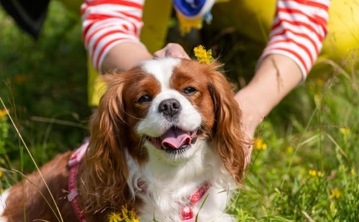

Meet Bowie

Breed: Cavalier King Charles
Age: 6 years old
Sex: Male
Location: Yorba Linda, CA
Adoption Fee: $300
Description: Bowie is a sweet and calm dog who loves to go with the flow. He loves to take naps and get lots of treats. Bowies has retinal dysplasia, a condition that causes him to be blind in one eye. He will need lots of attention and care.